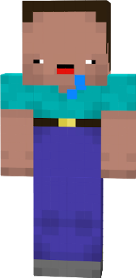

Make A Chad Foundation
Helping normie gamers become Chads since 2020.

What We Do
We here at MCF have been committed to offering noobs a path to a brighter future. A path that doesn't involve rats exit camping or squeakers camping in corners with a .725 shotgun. We believe every gamer should have the opportunity to get a winner winner chicken dinner without being carried by the rest of the team. With your donation, you help us help a filthy casual noob become an overnight TTV, e-sports professional, 2000 IQ, mega poggers, 9000 K/D, Faze worthy, Chad.
How We've Changed The Game
Not too long ago, the gaming community has forever complained about their trash team mates in games like Rainbow 6 seige, Call of Duty, CS:GO, and many others. We found that these complaints are a result of noobs like the one pictured here:
These poor noobs need help and guidance in order to become the gamers that they dream to be.
At MCF, we take random plebs from all kinds of games and put them through rigorous training that teaches them to play better and more confidently. We do all of this at no charge to the gamer, because most of these gamers couldn't really afford to take the course. We work hand-in-hand with gamers from the very beginning and monitor their progress. As our subjects continue, we make sure to continually increase the difficulty of training. This way, the gamers will be prepared to take on other Chads in the gaming world and win.
How You Can Help A Gamer In Need
Every month, we send out a newsletter that lets our community see into our operations at MCF. With each email provided, we match a day's worth of lessons to a lucky noob in our program. In addition to the newsletter, you can choose to receive information on how to donate to our lovely program.